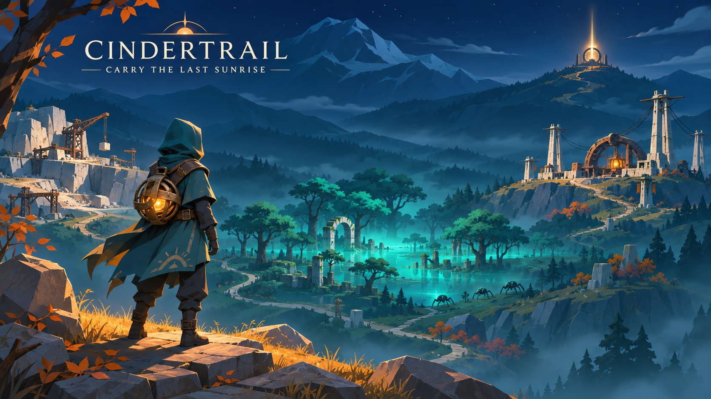
Visual target: cream faceted stone, teal woods and cobalt shadows, weathered brass, amber shrine light and readable silhouettes. Start with one faithful scene, compare real runtime screenshots with these references, then expand the game.
The visual world
Carry the Last SunriseMaster palette, traveler silhouette, valley scale and protected light.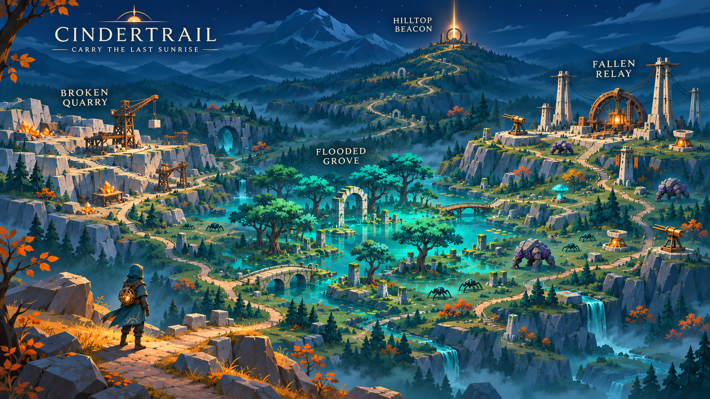
The Connected ValleyConnected terrain and route choices; this is an illustrative world plan.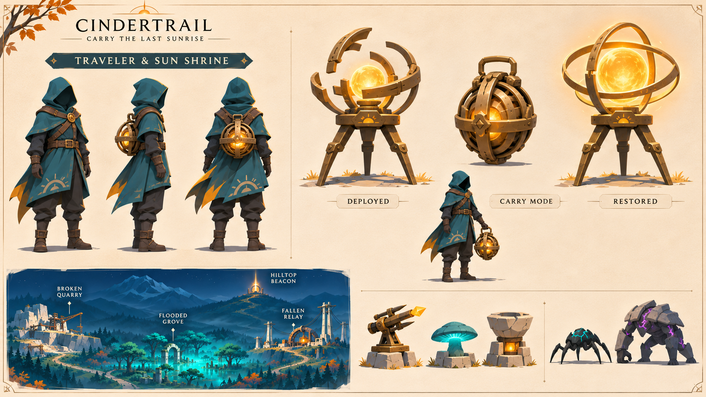
Traveler and Sun ShrineCharacter identity, deployed tripod, folded carry mode and restored sun.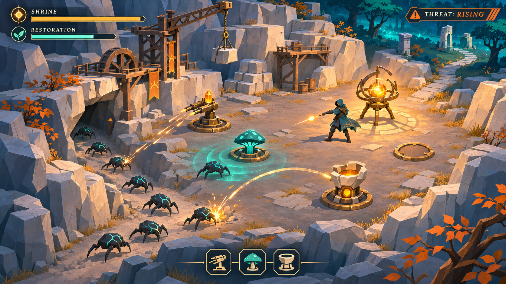
Broken Quarry DefenseNarrow approach, pale stone, dry sockets, warm/cool combat readability.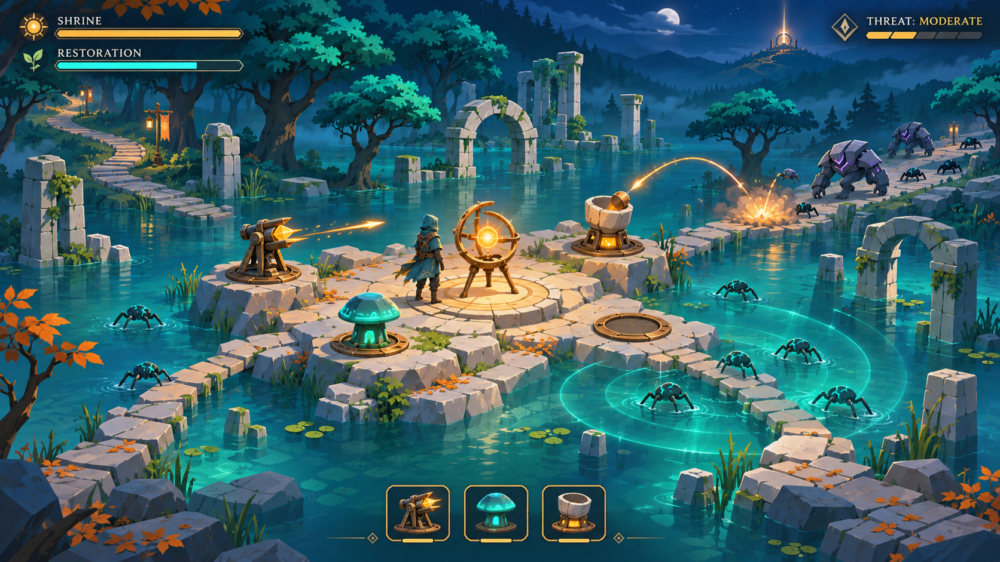
Flooded Grove DefenseWater routes, dry deployment island and cyan slowing field.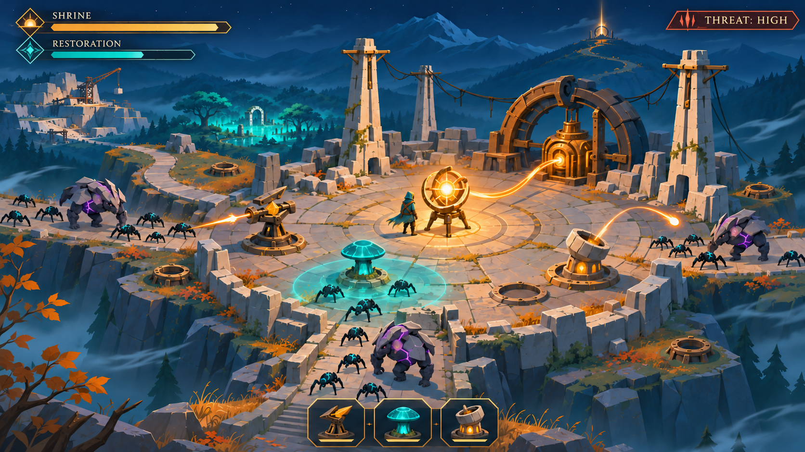
Fallen Relay DefenseThree exposed approaches and generator-fed restoration. Corrected one-core version.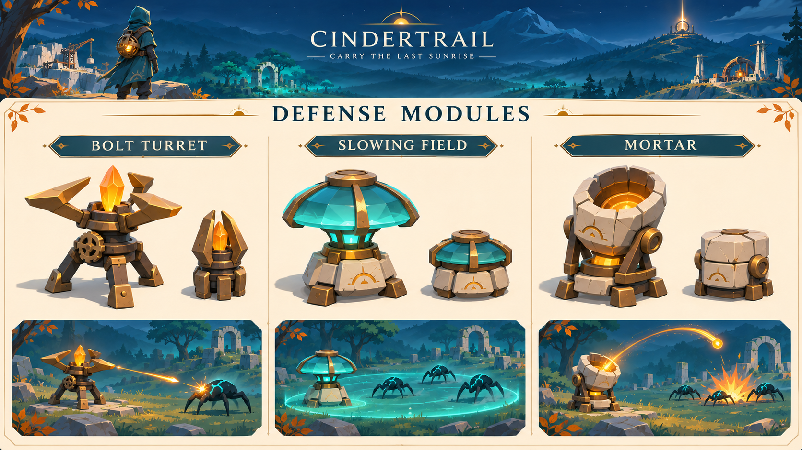
Defense ModulesBolt turret, slowing emitter, mortar and their compact forms.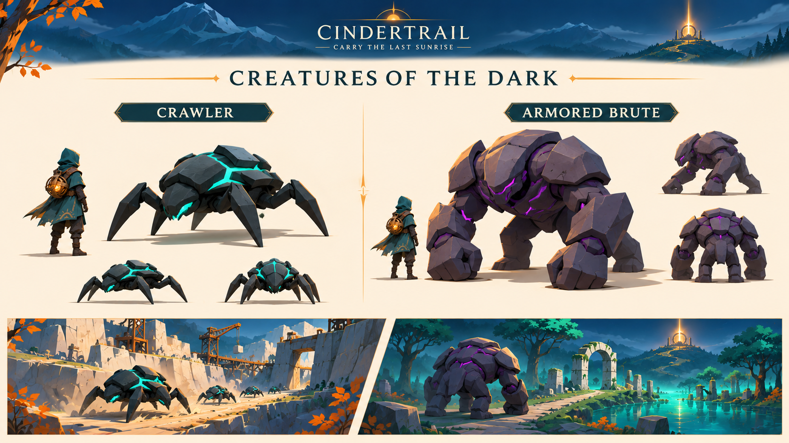
Creatures of the DarkCrawler and armored brute silhouette and material targets.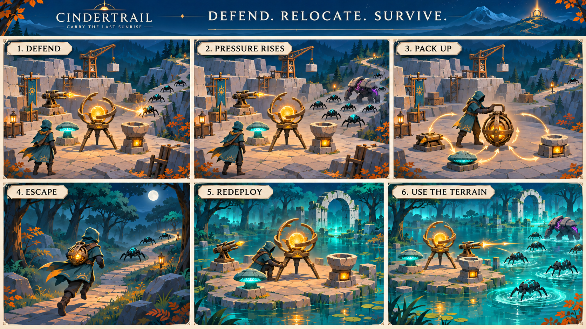
Defend, Relocate, SurviveCore loop from quarry defense through packing, travel and redeployment.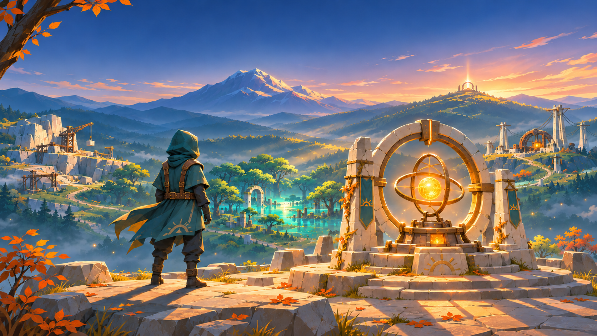
Delivered SunriseFinal visual payoff. Corrected version: core delivered, harness empty.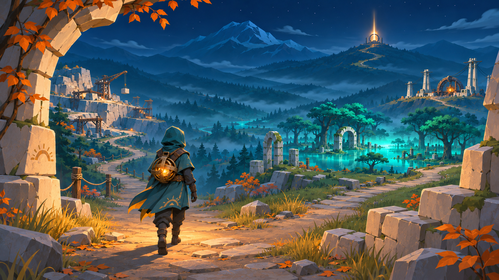
The Valley OpensPrimary exploration framing target: low third-person camera and reachable branching trails.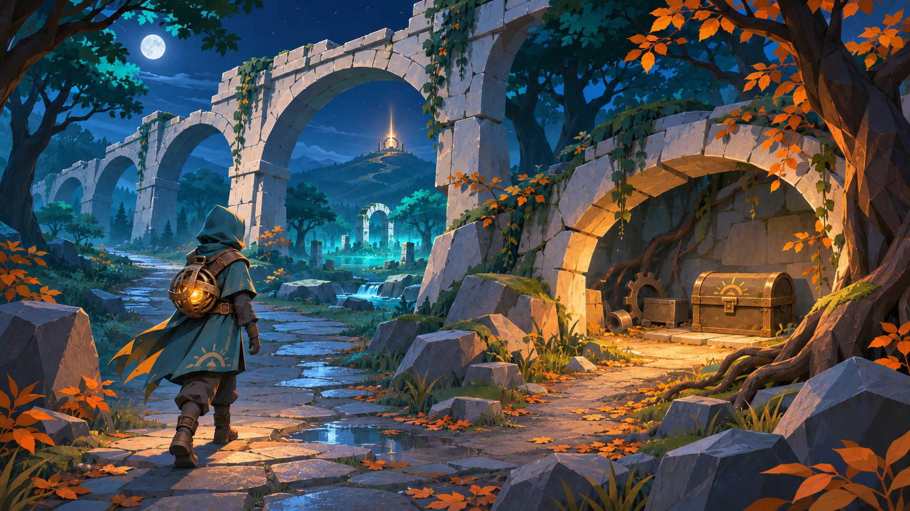
The Forgotten Side PathOptional supply discovery under an aqueduct; main route stays visible.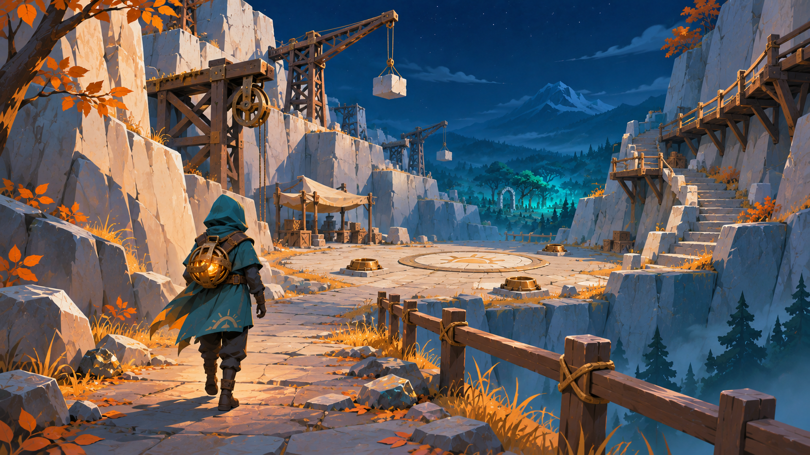
Road to Broken QuarryThird-person approach to an inactive camp and a high scouting route.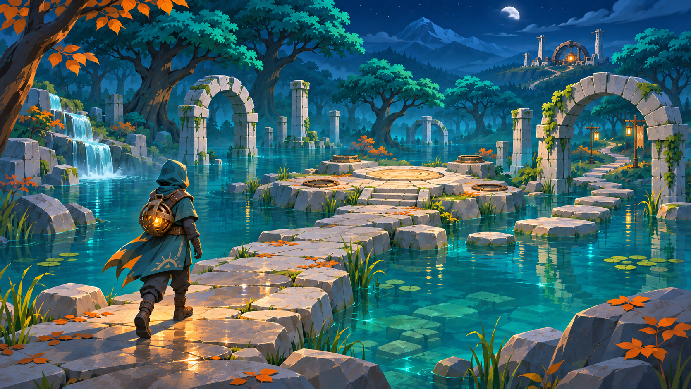
Crossing the Flooded GroveExplorable water causeways before the core is deployed.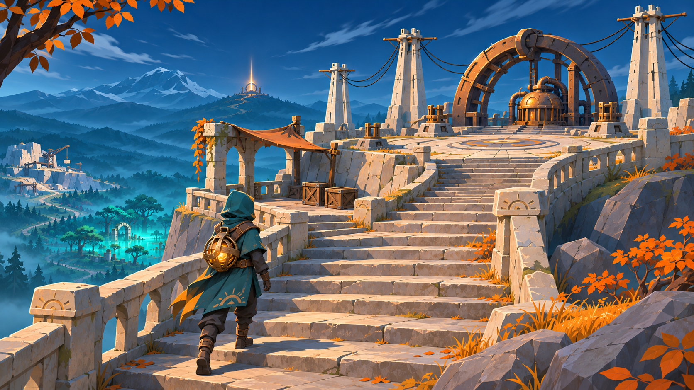
Ascent to Fallen RelayWalkable ridge stairs and distant landmarks.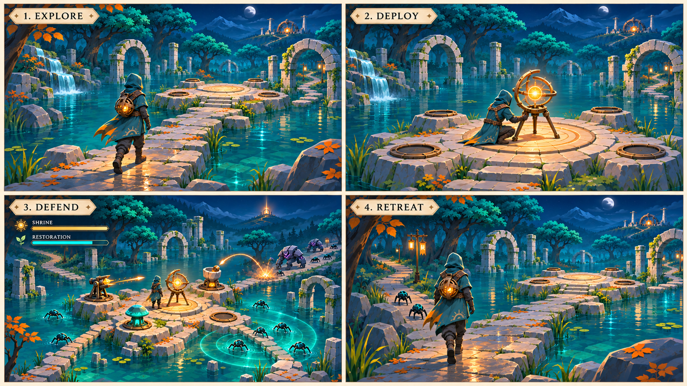
Explore, Deploy, Defend, RetreatAuthoritative camera-mode relationship in the same 3D world. Project documents
A practical art starting point
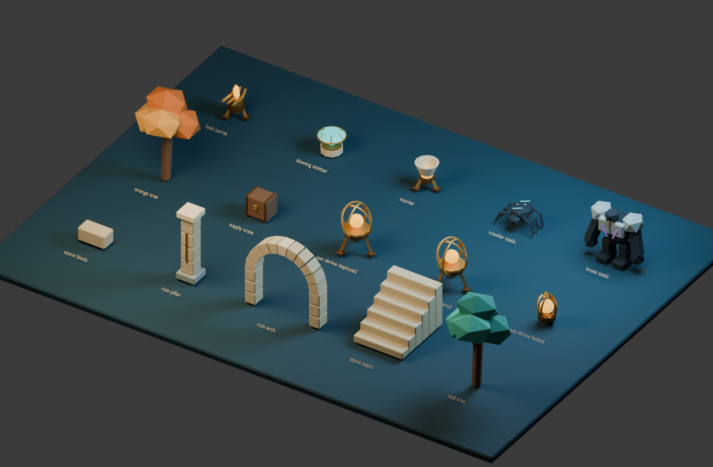
Actual delivered starter modelsA real Blender render of the editable mesh library. These are production starting points, not a finished scene or a visual-parity claim.Use the included material palette and procedural modular starter assets as a base. These are editable implementation aids rather than exact replicas of the concept paintings. Follow the material and model pipeline and asset sourcing guide. Inspect the model folder, the material folder and reproducible scripts.
Concept trailer
The supplied concept trailer is included unchanged. Still art and camera-mode documents remain the visual and gameplay targets.